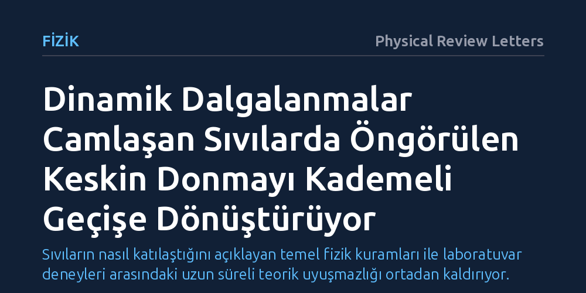

FIZIK · Physical Review Letters · 2026-09-09
Camlaşma teorilerinin öngördüğü moleküler donma durumunun gerçek deneylerde neden gözlenmediği araştırıldı. Mikroskobik kurama kritik dinamik dalgalanmaların eklenmesiyle, keskin bir faz dönüşümü yerine kademeli bir geçiş oluştuğu gösterilerek bu uyuşmazlık çözüldü.
Sıvıların nasıl katılaştığını açıklayan temel fizik kuramları ile laboratuvar deneyleri arasındaki uzun süreli teorik uyuşmazlığı ortadan kaldırıyor.

Gündelik hayatımızda pencerelerden telefon ekranlarına kadar her yerde kullandığımız cam, fizikçiler için halen tam olarak aydınlatılamamış bir bilmecedir. Bir sıvıyı donma noktasının altına hızla soğuttuğunuzda, moleküller düzenli bir kristal kafes oluşturacak zaman bulamaz. Sıvı gittikçe daha kıvamlı hale gelir ve sonunda katı gibi davranan fakat iç yapısı düzensiz bir sıvıya benzeyen amorf bir katıya, yani cama dönüşür. Bu sürecin mikroskobik düzeyde tam olarak nasıl gerçekleştiği fizik dünyasında onlarca yıldır tartışılmaktadır.
Bu süreci anlamak için geliştirilen geleneksel ortalama alan kuramları, belirli bir sıcaklıkta sıvı moleküllerinin hareketinin tamamen duracağını öngörür. Matematiksel olarak bu durum, sistemin keskin bir faz dönüşümüyle tamamen kilitlenmiş dinamik bir durağanlık haline geçmesi demektir. Ancak laboratuvarda yapılan gerçek deneylerde veya bilgisayar simülasyonlarında hiçbir zaman böyle keskin bir donma noktası gözlenmemiştir. Sıvı soğudukça yavaşlar ama hareketsizlik aniden oluşmaz; bu uyuşmazlık teorik fizikçileri uzun süredir meşgul eden derin bir çelişki olarak kalmıştır.
Geleneksel ortalama alan modelleri, sistemi basitleştirmek adına her bir parçacığın çevresindeki tüm komşularıyla yalnızca ortalama bir etkileşim içinde olduğunu varsayar. Bu varsayım matematiksel olarak hesaplamaları kolaylaştırsa da üç boyutlu gerçek dünyamızda önemli bir ayrıntıyı gözden kaçırır: yerel dalgalanmalar. Gerçek bir sıvıda moleküller hiçbir zaman mükemmel bir tekdüzelik içinde hareket etmez; belirli bölgelerde anlık yoğunlaşmalar ve gevşemeler meydana gelir.
Araştırmacılar Corentin C. L. Laudicina, Liesbeth M. C. Janssen ve Grzegorz Szamel, bu eksikliği gidermek için doğrudan mikroskobik düzeyden yola çıkan yeni bir teorik çatı kurdular. Ekip, sonlu boyutlu sistemlerde kaçınılmaz olarak ortaya çıkan kritik dinamik dalgalanmaları kuramın temel denklemlerine matematiksel olarak entegre etti. Böylece sıvı içindeki moleküllerin sadece ortalama davranışı değil, mikroskobik ölçekteki anlık hareketlilik sapmaları da modelin bir parçası haline geldi.
Geliştirilen bu yeni mikroskobik kuram, camlaşma sürecine dair çok kritik bir gerçeği ortaya çıkardı: Kritik dinamik dalgalanmalar hesaba katıldığında, teorinin daha önce öngördüğü keskin ve ani dinamik kilitlenme ortadan kalkıyor. Moleküllerin hareketinin birdenbire donması yerine, sistem kesintisiz ve kademeli bir yavaşlama evresine giriyor.
Dalgalanmalar, sistemin bazı bölgelerinde moleküllerin birbirini tamamen hapsetmesini engelliyor ve yerel düzeyde hareketliliğin bir süre daha devam etmesini sağlıyor. Bu durum, laboratuvar deneylerinde ve bilgisayar simülasyonlarında gözlemlenen davranışla birebir örtüşüyor. Böylece teorik modellerin öngördüğü hayali faz dönüşümü ile gerçek dünyada ölçülen sürekli viskozite artışı arasındaki çelişki kuramsal olarak çözülmüş oldu.
Bu bulgu, karmaşık sıvıların ve cam benzeri malzemelerin doğasını anlamamızda kuramsal bir netlik sağlıyor. Fizikçiler artık aşırı soğutulmuş sıvıların davranışını açıklarken deneylerle çelişen soyut kilitlenme varsayımlarına bağımlı kalmak zorunda değiller. Dinamik dalgalanmaların sisteme dahil edilmesi, amorf malzemelerin mikroskobik dinamiklerini gerçekçi fiziksel temellere oturtuyor.
Bu tür temel kuramsal ilerlemeler, uzun vadede polimerlerden metalik camlara, ilaç formülasyonlarından yeni nesil amorf yarı iletkenlere kadar pek çok malzemenin mikroskobik davranışını daha iyi tahmin etmemizi sağlayabilir. Sıvı ile katı arasındaki sınırın nasıl çizildiğini tam olarak anlamak, malzeme biliminde daha kararlı ve işlevsel yapılar tasarlamanın temel taşlarından biridir.